Rockfish Weatherwear
브랜드 무드를 사용자 경험으로 재해석하다
웹페이지 리뉴얼 개인 프로젝트
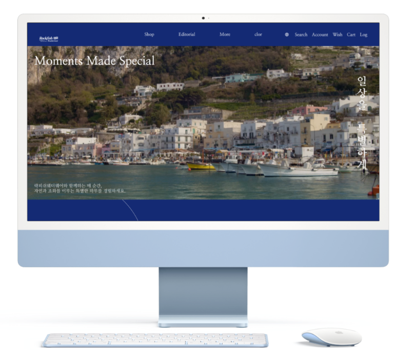
Personal Project
기획 · 디자인 · 퍼블리싱
Project Duration
Brand Experience Redesign
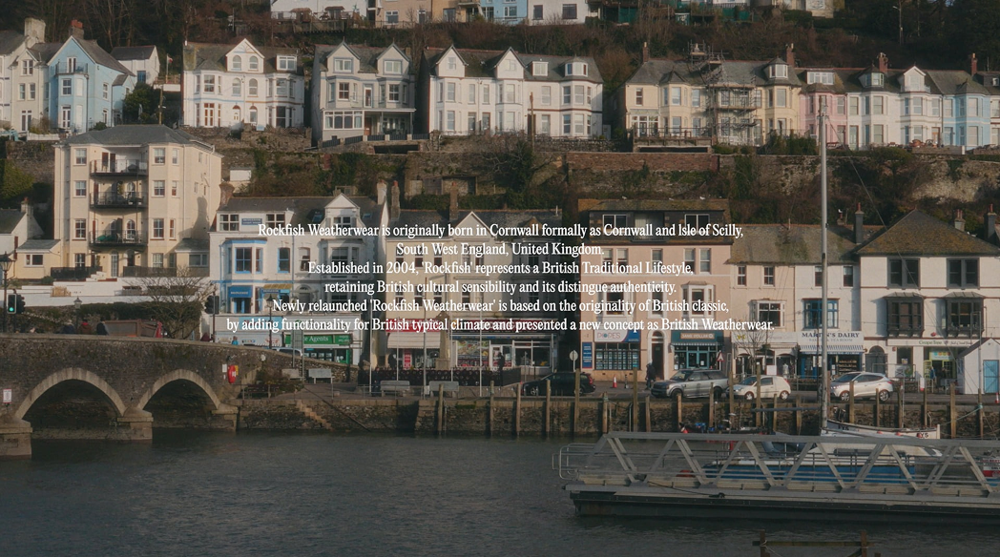
Overview
일상 속 날씨와 계절감을 브랜드 경험으로
락피쉬웨더웨어의 클래식한 브랜드 톤과 상품 이미지를 유지하면서 룩북에서 상품 탐색까지 이어지는 구조로 정리했습니다.
Design System
메인 컬러와 이미지 에셋을 기준으로 구성
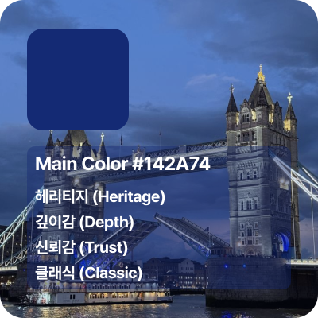
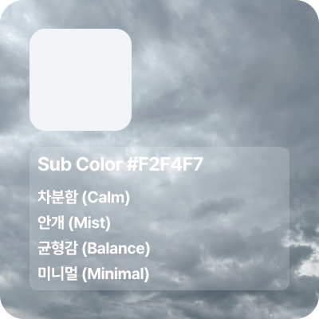
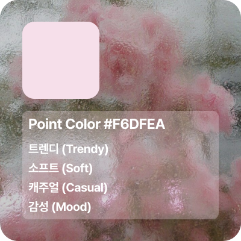
Desktop Screens
화면 흐름을 섹션 단위로 분리
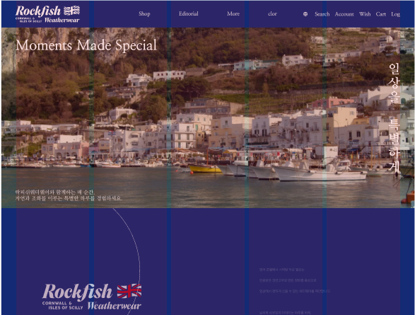
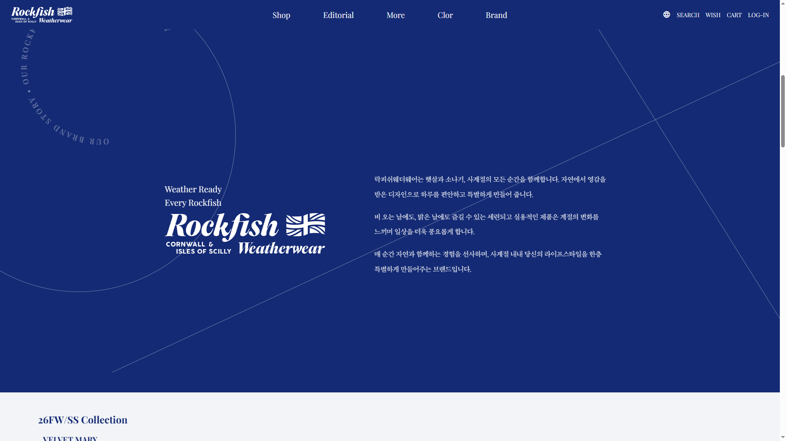
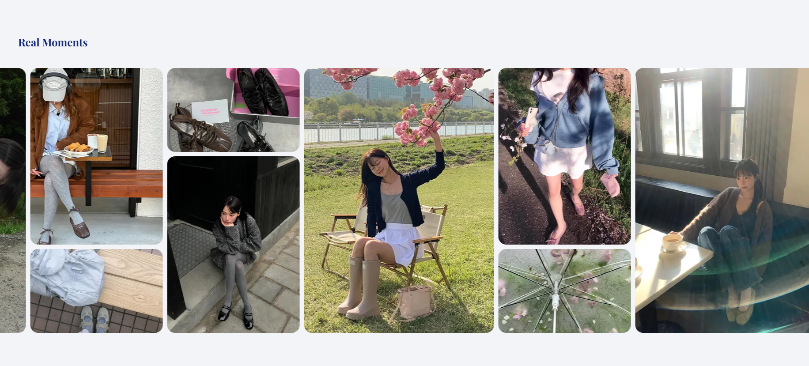
Responsive
모바일 화면도 개별 에셋으로 관리
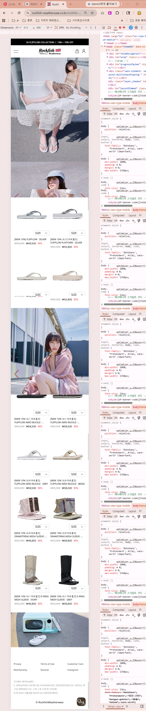
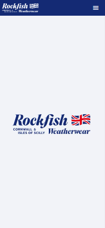
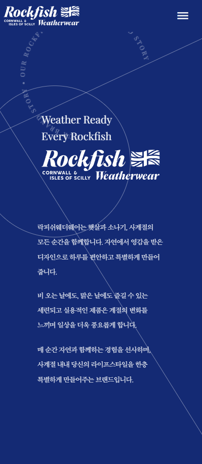
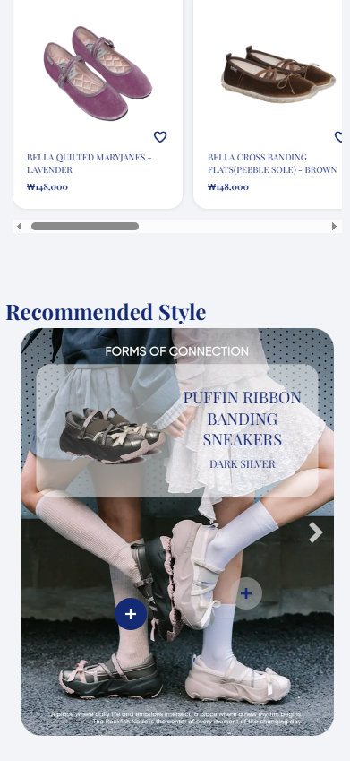